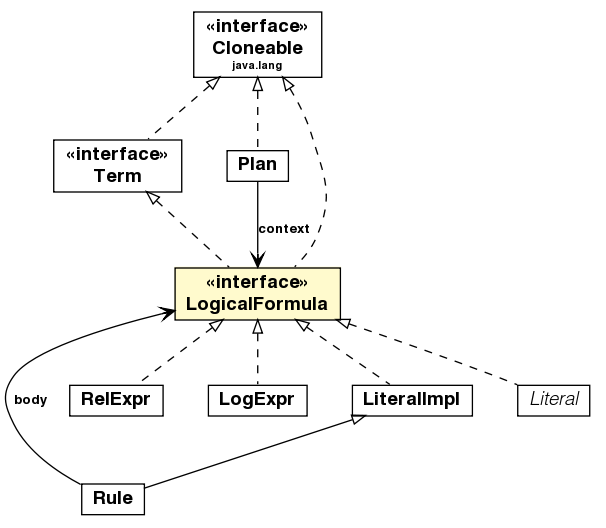

jason.asSyntax
Interface LogicalFormula

- All Superinterfaces:
- java.lang.Cloneable, java.lang.Comparable<Term>, java.io.Serializable, Term, ToDOM
- All Known Implementing Classes:
- ArithExpr, ArithFunctionTerm, Atom, BinaryStructure, BodyLiteral, InternalActionLiteral, ListTermImpl, Literal, LiteralImpl, LogExpr, Plan, PlanBodyImpl, Pred, RelExpr, Rule, Structure, Trigger, UnnamedVar, VarTerm
public interface LogicalFormula
- extends Term, java.lang.Cloneable
Represents a logical formula (p, p & q, not p, 3 > X, ...) which can be
evaluated into a truth value.
| Methods inherited from interface jason.asSyntax.Term |
apply, clone, countVars, equals, getSrcInfo, hasVar, isArithExpr, isAtom, isGround, isInternalAction, isList, isLiteral, isNumeric, isPlanBody, isPred, isRule, isString, isStructure, isUnnamedVar, isVar, setSrcInfo |
| Methods inherited from interface java.lang.Comparable |
compareTo |
logicalConsequence
java.util.Iterator<Unifier> logicalConsequence(Agent ag,
Unifier un)
- Checks whether the formula is a
logical consequence of the belief base.
Returns an iterator for all unifiers that are consequence.